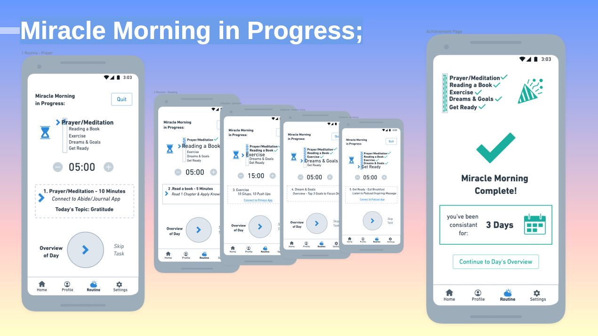

Miracle Morning: Simplifying Daily Routines
How taking a break from design helped me turn a cluttered 40-screen mobile app concept into a simple, automated 8-screen flow.
The Initial Idea (2020)
The goal was to design a mobile app companion for Hal Elrod's book, The Miracle Morning. When I first started, I thought a great app needed to have as many features as possible. I tried to build in options for every single small habit choice a user could make.
What Users Found Frustrating
When I talked to people who used morning trackers, they all said the same thing: updating the app felt like extra chores. Setting up timers, filling out forms, and tapping boxes to save their progress ruined the peaceful mood of their morning.

This original flow map shows the early 40-screen version of the app. It helped me identify redundant paths, reduce decision points, and focus the mobile experience on a simpler core routine.
The Intermission (Learning to Say No)
After creating my first rough concept, I spent a few years working directly on live movie sets directing videos and writing scripts. Working in film taught me how to edit out filler scenes that slowed down the story. When I came back to look at my app design, I realized it was full of digital filler screens that users didn't actually need.
💡 The Big Realization
A user doesn't need to tap through five confirmation screens just to prove they meditated. The app should get out of the way as fast as possible so they can focus on their life, not the interface.
Usability Testing & Practical Fixes
Testing my initial design layouts with real people exposed a few severe roadblocks. Here is exactly what was frustrating users, and the visual changes made to fix them:
Overwhelming Setup Process
Users had to fill out multi-page forms to set up their morning routine timers before they could start using the app.

One-Tap Fast Starts
Replaced forms with smart, pre-set recommended times. Users can now launch their routine instantly with a single tap.

Constant Interruption and Tapping
Users had to pick up their phone and tap 'Next' at the end of every individual routine block, breaking their concentration.

Auto-Advancing Timeline Flow
Designed an automated dashboard hub. Once the morning session starts, the app moves smoothly from one step to the next on its own.

The Final Solution (2026 Redesign)
By cutting away the clutter, I dropped the total number of app screens down from 40 to 8 simple, focused layouts.
Original App Layout
Lots of menus, configurations, and pop-ups.
2026 Redesign Layout
Hands-free, automated single-flow timeline.